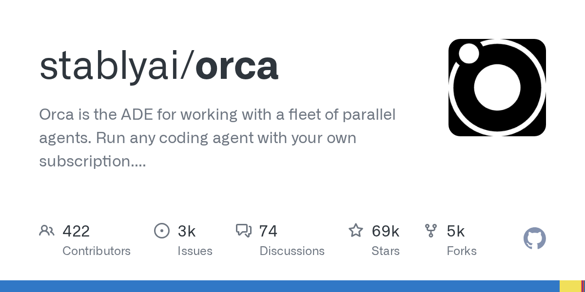

01 GitHub
stablyai/orca
에이전트 다섯 개를 나눠 돌리는 작업실
★ 69,538이번 주 +4,581TypeScriptMIT 사내 사용 가능릴리스 v1.4.203 (09.15)최근 활동 09.16테스트 있음예제 있음AGENTS.md 있음

코딩 에이전트가 늘수록 화면도, 작업 맥락도 함께 늘어난다. Orca는 이 문제를 한 앱 안에서 정리하려고 만든 도구다. 데스크톱과 모바일, 원격 서버를 묶어 에이전트 작업을 이어서 본다. 팀이 여러 모델과 에이전트를 함께 쓰는 환경에 맞춘 구성이 눈에 띈다.
무엇을 하는 물건인가
Orca는 여러 코딩 에이전트를 한곳에서 다루는 데스크톱 작업 환경이다. 같은 요청을 여러 에이전트에 동시에 보내고, 각 결과를 분리된 작업 트리에서 비교한다. GitHub PR과 이슈 검토, 터미널 작업, 파일 편집도 한 화면에 모은다. 여러 담당자에게 같은 초안을 맡긴 뒤 가장 나은 안을 골라 합치는 편집실에 가깝다.
스펙과 도입 조건
- TypeScript로 만들었다.
- macOS, Windows, Linux용 데스크톱 앱을 제공한다.
- iOS와 Android용 모바일 보조 앱을 함께 둔다.
- Homebrew와 AUR로도 설치할 수 있다.
- 헤드리스 Linux 서버 실행 가이드를 제공한다.
- Dockerfile은 없다.
- 터미널에서 실행되는 CLI 에이전트라면 연동할 수 있다고 밝힌다.
- MIT 라이선스를 쓴다.
- 최신 릴리스는 v1.4.203이며 2026년 9월 15일에 나왔다.
- 변경 사항 목록은 거의 매일 갱신한다고 적었다.
대안 대비 차별점
이 저장소는 특정 모델이나 특정 에이전트에 묶이지 않는다. 터미널에서 도는 CLI 에이전트라면 대부분 연결할 수 있게 잡았다. GitHub와 Linear 작업 화면, 코드 편집기, 터미널, diff 주석, 모바일 모니터링을 한 앱에 넣은 점도 특징이다. 비슷한 도구가 한 에이전트의 코드 작성에 집중했다면, Orca는 여러 에이전트를 병렬로 돌리고 비교하는 운영 화면에 더 가깝다.
이럴 때 쓰면 좋다
- 야간 배치 장애 원인을 찾을 때 같은 로그 분석 지시를 여러 에이전트에 보내고 가장 설득력 있는 수정안을 고를 수 있다.
- 고객 문의 시스템 개편처럼 GitHub 이슈와 PR 검토가 많은 업무에서 작업 전환 없이 같은 화면에서 확인하고 수정할 수 있다.
- 사내 운영 서버에서 무거운 코딩 작업을 돌리고 이동 중에는 휴대폰으로 진행 상태만 확인해야 할 때 맞는다.
핵심 기능
- 한 프롬프트를 최대 다섯 에이전트에 나눠 보내고, 각 에이전트를 분리된 git 작업 트리에서 실행한다.
- 실제 Chromium 창의 UI 요소를 클릭하면 HTML과 CSS, 잘라낸 화면을 에이전트 프롬프트로 바로 보낸다.
- 원격 서버의 에이전트 작업을 SSH로 연결해 파일 편집, git, 터미널, 자동 재연결, 포트 포워딩까지 처리한다.
사내 도입 체크
- 외부 API 키 필요 여부는 에이전트별로 다르다. Orca 자체가 키를 발급하지는 않는다.
- 원격 서버와 모바일 연동, 텔레메트리 수집 문서가 있다. 업무 데이터가 외부로 나가는 범위는 설정 확인이 필요하다.
- 저장소와 모바일-데스크톱 중계 코드(cloud/)를 같은 저장소에서 관리한다.
- 대체 가능한 상용 제품은 확인 가능하다. 다만 이 저장소는 오픈소스로 여러 CLI 에이전트를 한 화면에 모으는 데 초점을 둔다.
주요 용어
작업 트리(worktree): 한 저장소를 분리된 작업 공간으로 나눠 쓰는 방식 CLI(Command Line Interface): 터미널 명령으로 쓰는 실행 환경 포트 포워딩(port forwarding): 원격 서버의 포트를 내 PC로 연결하는 기능 원격 런타임(remote runtime): 작업을 내 PC가 아닌 외부 서버에서 돌리는 환경 Electron: 웹 기술로 데스크톱 앱을 만드는 프레임워크
원문 정보
제목: stablyai/orca
최근 활동: 2026.09.16
출처 URL: https://github.com/stablyai/orca